Vision
A happy, active and safe place to grow.
To provide a happy, active, safe and home-like atmosphere for children, teach important life values and help students grow into responsible global citizens through quality education.
About AARK
AARK’s learning environment is designed to support children linguistically, intellectually, physically, emotionally and socially. Academic learning is complemented by technology, sport, creativity, values and practical experiences so students have opportunities to develop in more than one dimension.
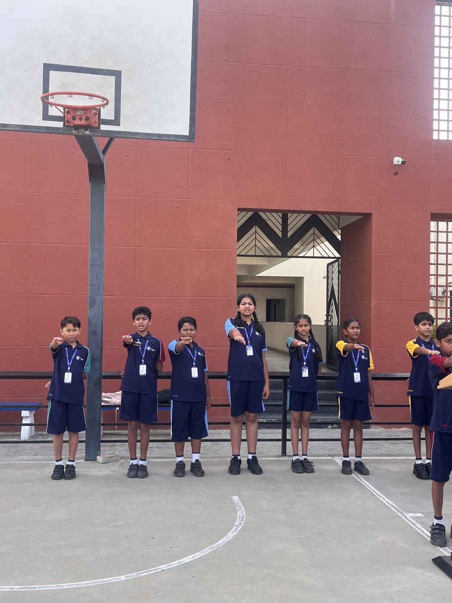
Vision
To provide a happy, active, safe and home-like atmosphere for children, teach important life values and help students grow into responsible global citizens through quality education.
Mission
To nurture academic excellence and character development through a stimulating, positive and caring environment where children can learn with confidence.
Our Core Philosophy
AARK follows the global standards of the NEP and NCF curriculum, with a classroom environment and study models designed to help children grow linguistically, intellectually, physically, emotionally and socially. The approach places emphasis on concept-based, practical and child-friendly learning, with experiences that encourage curiosity, participation, independence and lasting understanding.
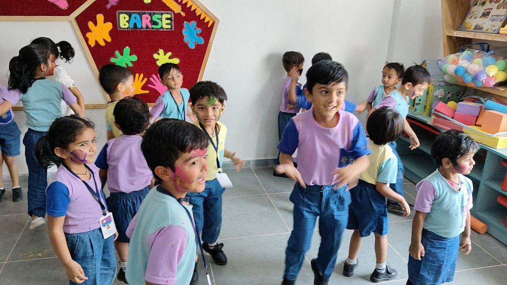


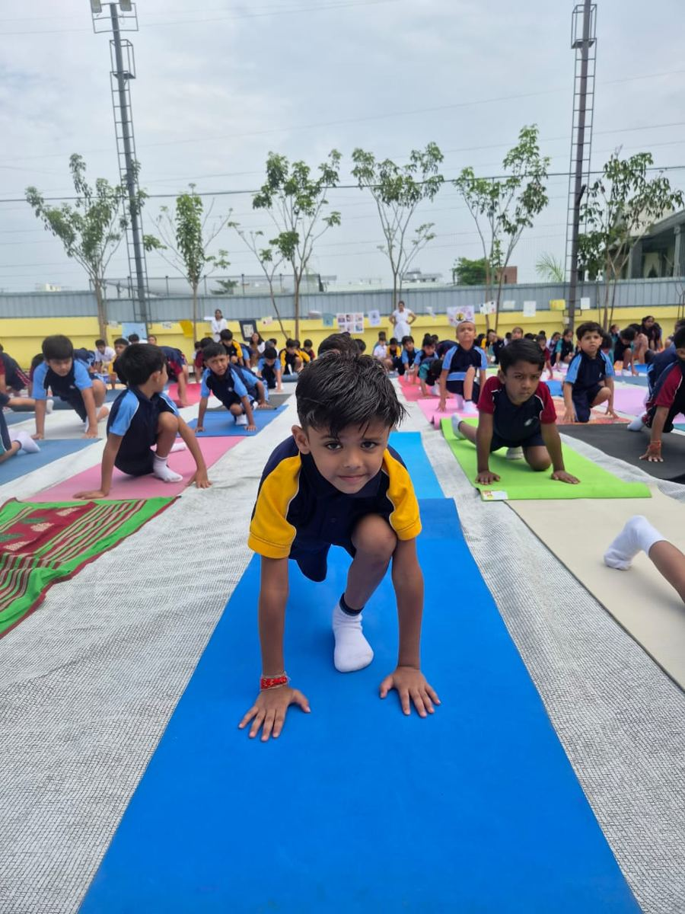

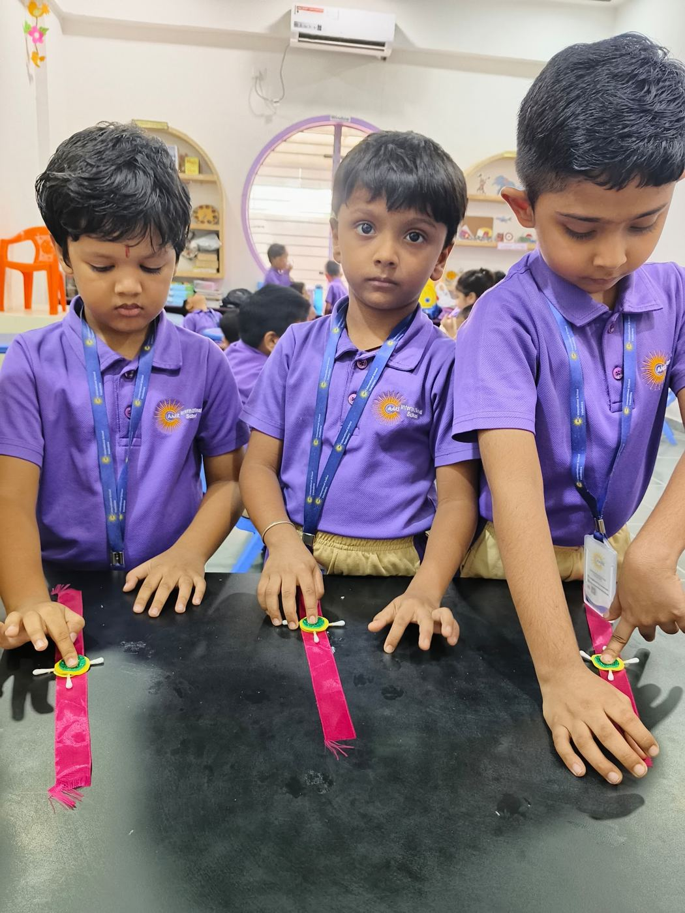
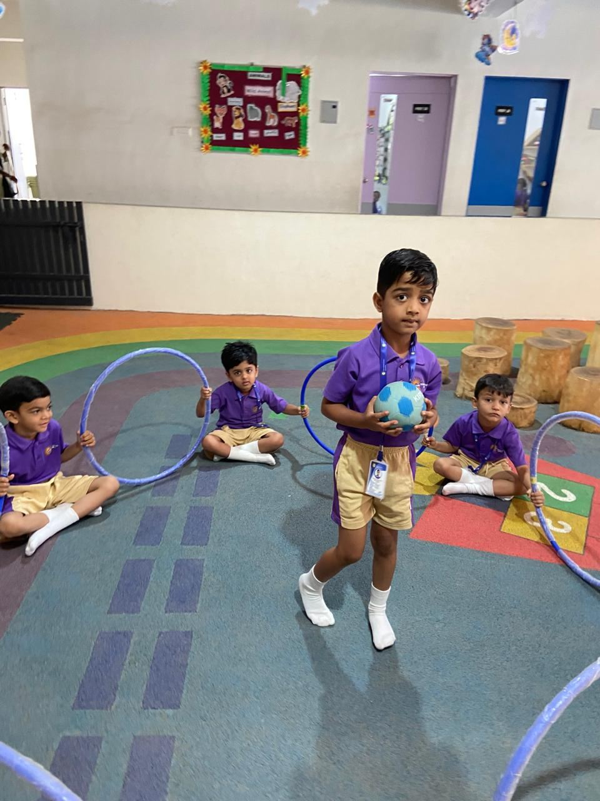

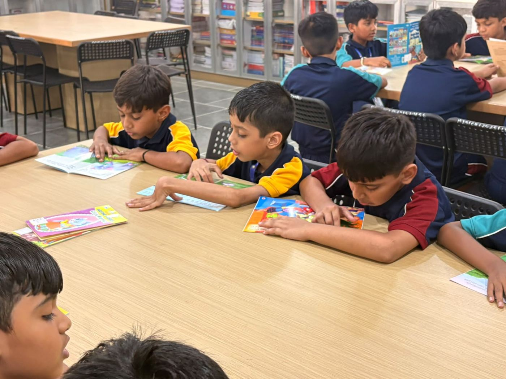
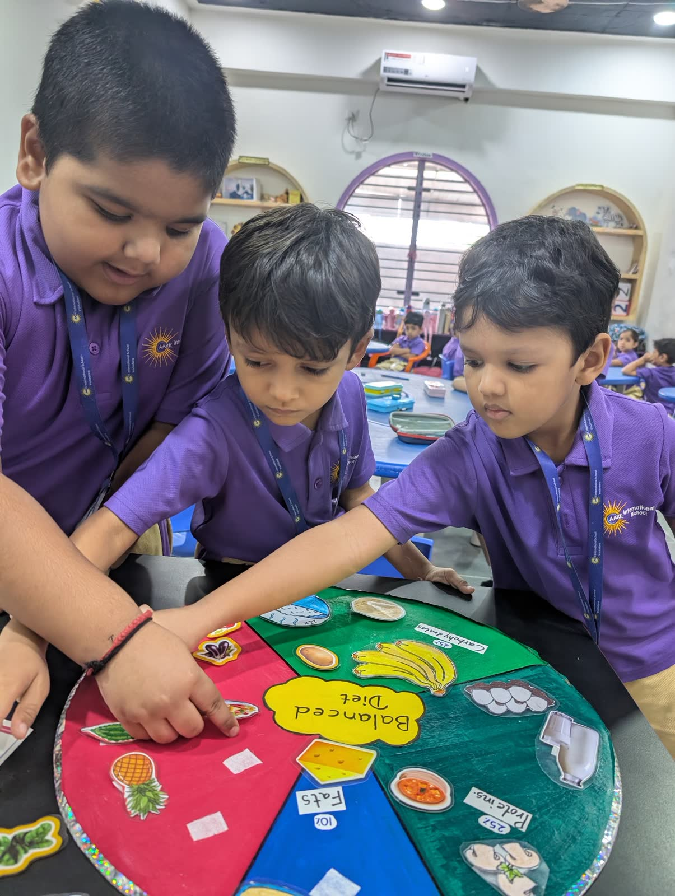
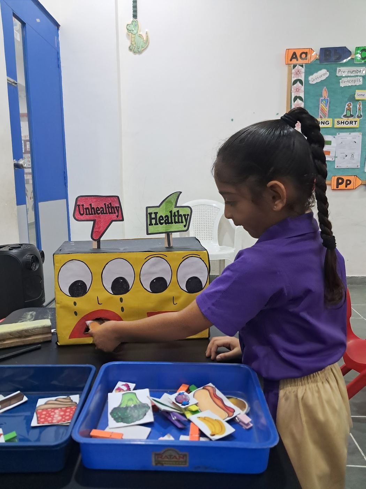
Qualitative Objectives
AARK’s approach gives importance to creativity, compassion, academic growth, strong learning habits, values, empathy and responsible citizenship.
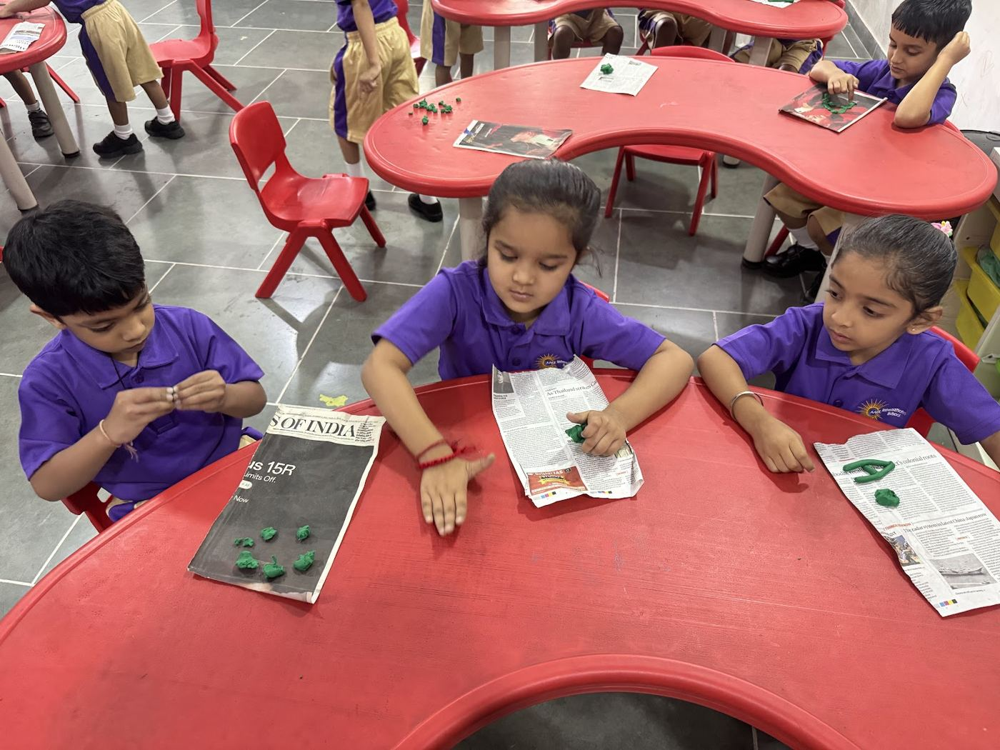

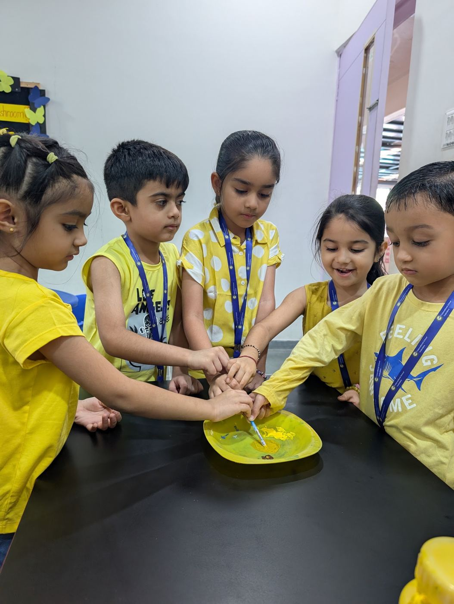

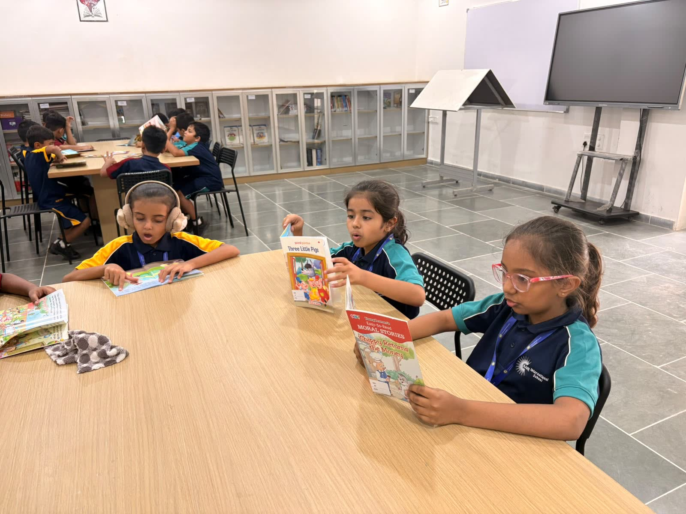
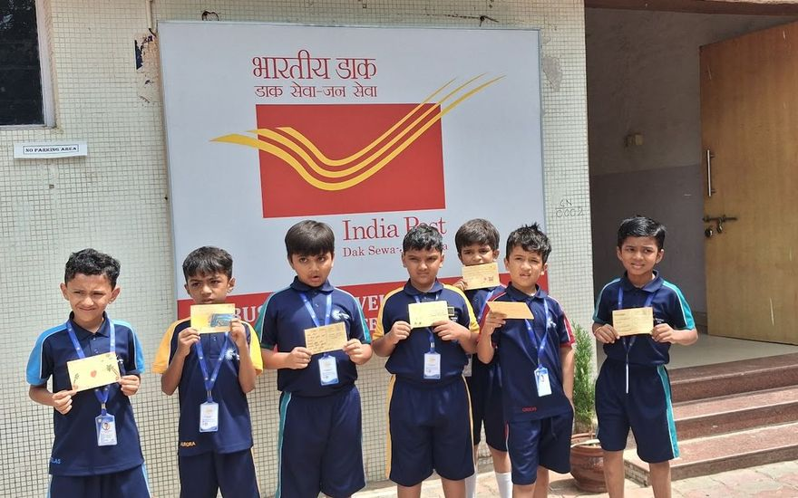


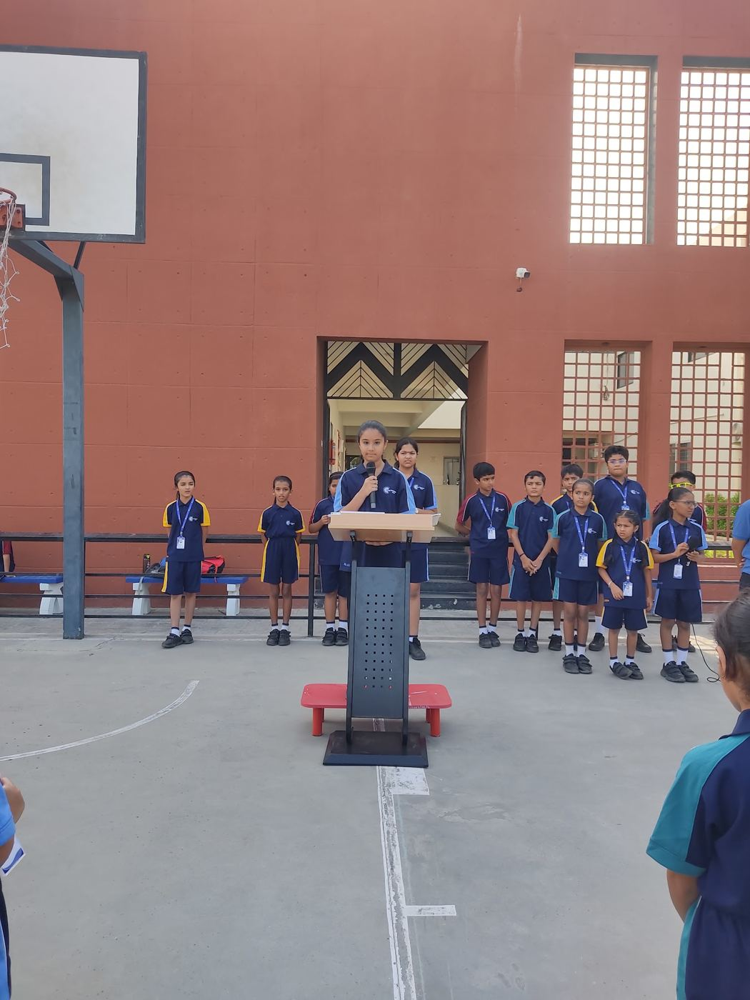

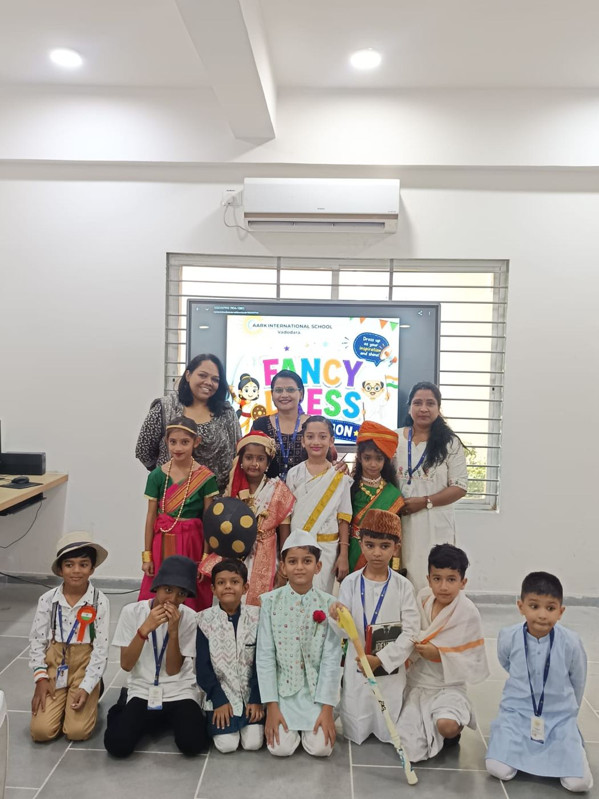